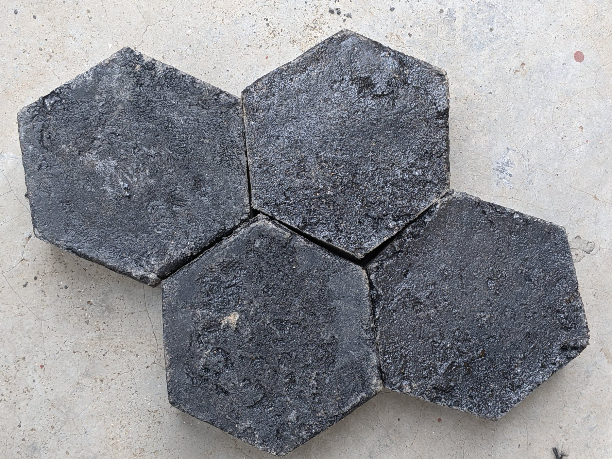
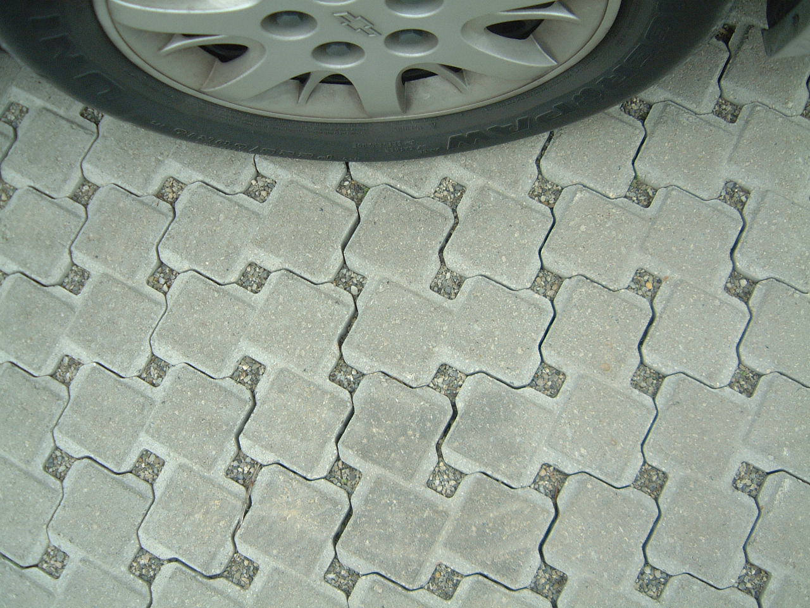
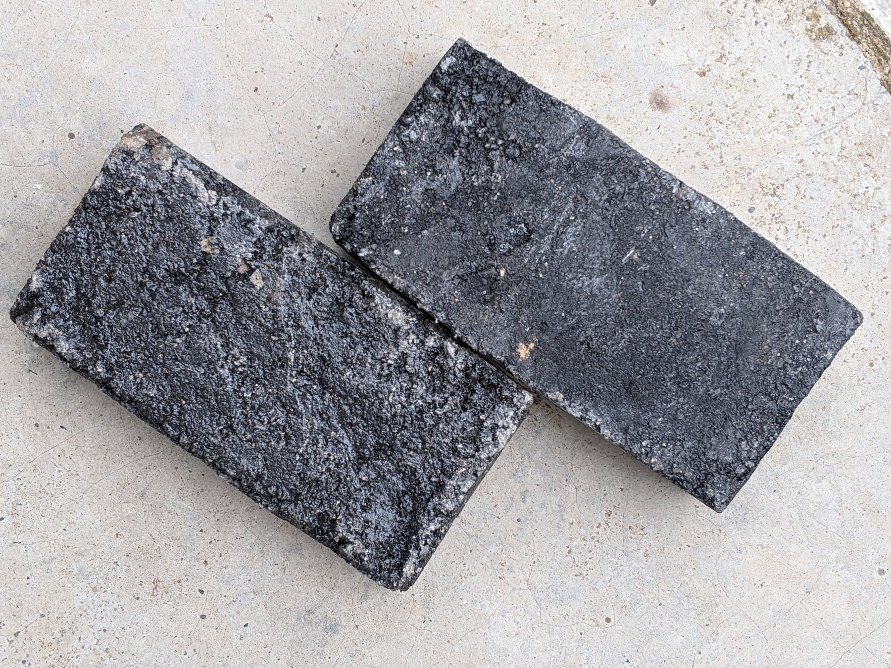
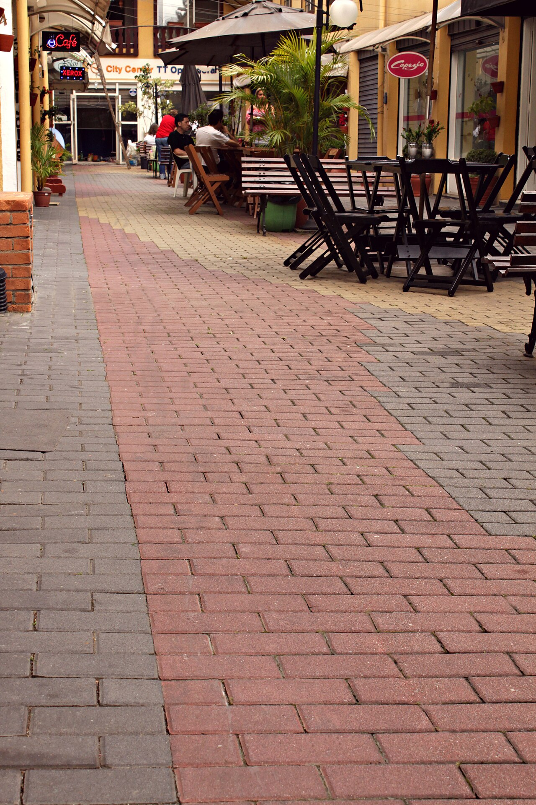

MATERIALS IN VIEW / 04
Paver reference
photos.
This gallery combines owner-supplied GREENPAVERS photos with clearly labelled reference images. Reference images are not GREENPAVERS projects.
Talk about a project
04 GALLERY
01 / THE COLLECTIONOWNER PHOTOS + REFERENCE PHOTOS
Examples of
paved surfaces.
The first two GREENPAVERS photos were supplied for this project. Other images are Wikimedia Commons references and do not show GREENPAVERS products or projects.



HAVE A PROJECT?REQUEST PAVERS
Need pavers
for a project?
Tell us the location, intended use and approximate quantity you need.
Request pavers